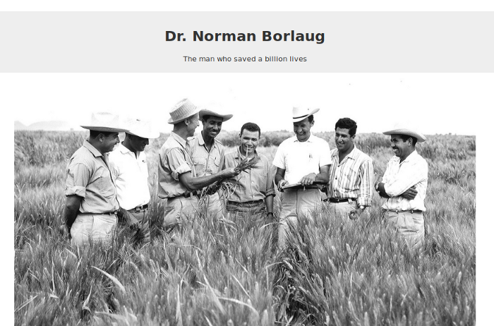

Dr Norman Borlaug
The man who saves million lives

Here's a timeline for Dr Emmanuel life
- 1914-Born in Cresco, Iowa
- 1933-Leaves his family's farm to attend the University of Minnesoca, thanks to a Depression era program knawn as the "National Youth Administration
- 1935-Has to stop school and save up more money, Works in the Civilian Conservation Corps, helping starving Americans, "I saw how food changed them", he said. "All of this left scars on me."
- 1937-Finishes university and takes a job In the US Forestry Service
"Borlaug's life and achievenent are testimony to the far-reaching coetribution that coe man's towering intellect, persistence and scientific vision can make to bruman peace and
progress."
-Indian Prime Minister Manmohan Singh
If you have time, you should read more about this incredible human being on his Wikipedia entry.